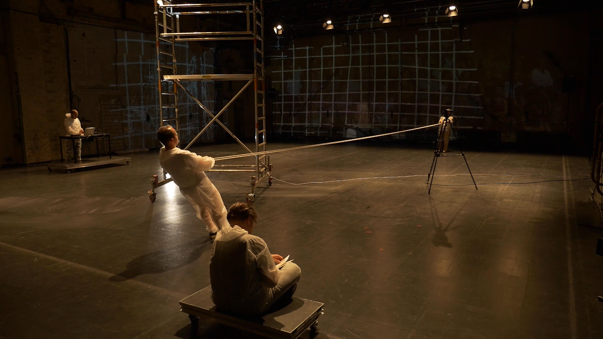
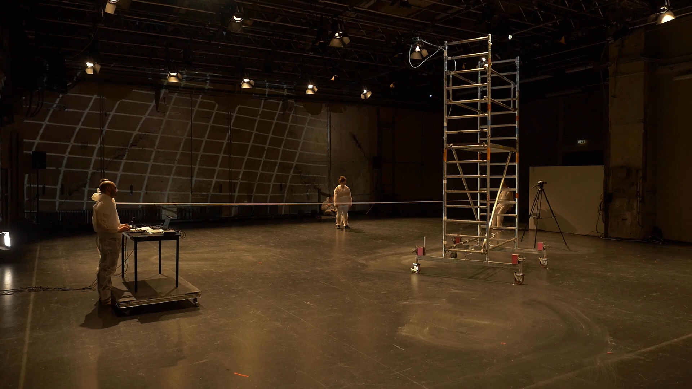
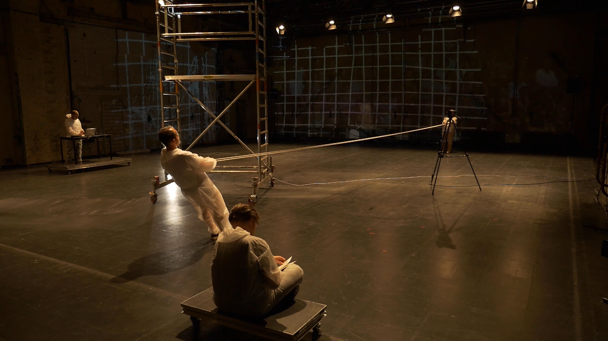
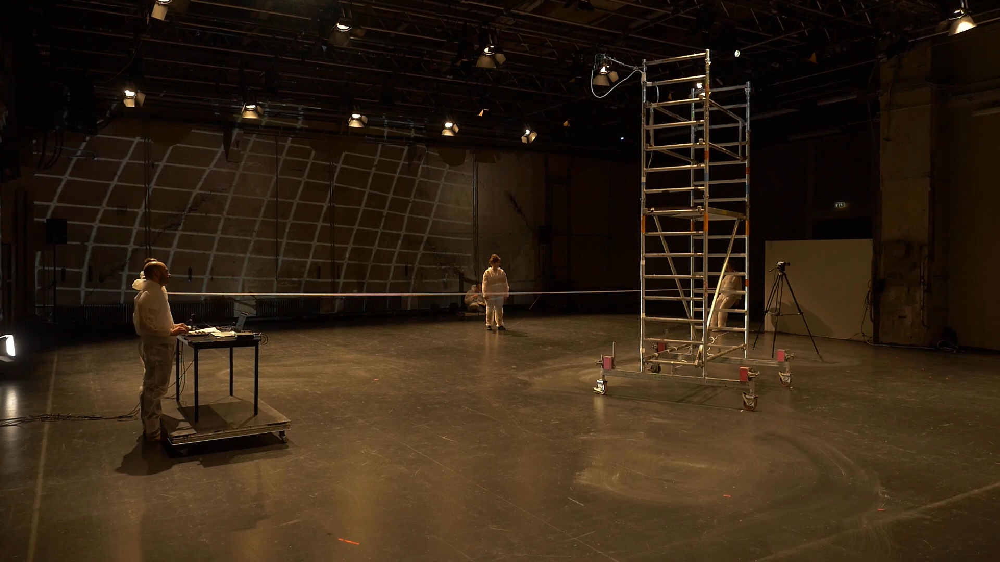

a vertice: Das erste Weilchen einer Ewigkeit ohne Dauer
"If we imagine that we are at the top, that we have reached the top and look down on a city, like a satellite, then this city looks like a cell body, like an amalgamation of countless small work and living units: and because If we look from above, we think that we can understand the overall system, have an overview, almost schematically, like a map or a diagram of a body part, a cell unit in the textbook. This cell unit wants to be tall, wants more: it takes a little more time. We become a story of perspectives, of communities, figures and projections. We become the history of humanity in the universe. a vertice: We become the first time of an eternity with no duration."
Ilja Mirsky (Regie, Performance), Franca Luisa Burandt (Performance), Franziska Jakobi (Performance & Dramaturgie), Fanis Gioles (Sound & Komposition), Thomas Volgmann (Sprecher & Text), Vivienne Mayer (Bühnendesign), Tanja Frank (Blick von Außen), Lukas Schädler (Dramaturgie)
 


